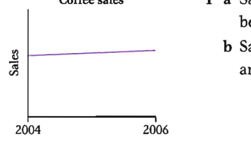
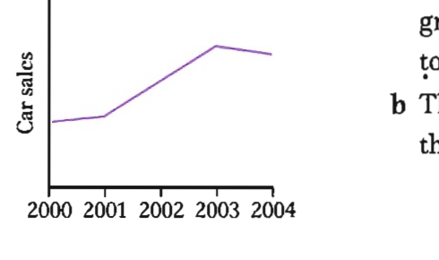
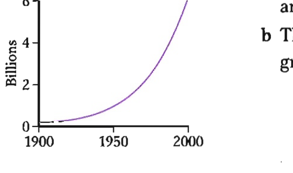
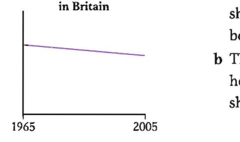
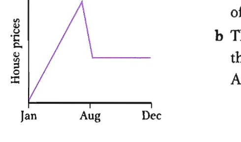

Pre-listening: guess the countries
You are going to hear a man talking about a recent trip.
Look at the pictures and try to guess which three countries the man visited. Then listen to check if you were right.
Listen to check if you were right — Track 14
Track 14 — a man talking about a recent trip
Context listening
Listen again and complete the table — Track 14
Listen again and complete the table below. Write no more than two words for each answer.
| Countries visited | Interesting facts |
|---|---|
| 1 | many and beautiful mosques |
| 3 | travelled there by ; good for ; bought a beautiful |
| 7 | visited Gujarati Textile ; great examples of embroidery; lots of wildlife in areas; saw incredible birds and several poisonous |
Look at Exercise 3 and make a list of all the adjectives
Look at Exercise 3 and make a list of all the adjectives.
B1 — Adjectives
Adjectives describe nouns.
How adjectives are used
- before nouns: There are so many historical buildings. It was well worth the trip, especially if you like local crafts.
- after the following verbs: be, become, get, seem, appear, look, smell, taste, feel — The mosques in particular are very beautiful. They always seem pleased to see you.
- after find/make/keep + object: Work hard on your research if you want to make your trip enjoyable and rewarding. I found the insects rather frightening.
- with other adjectives or with other nouns to describe a noun: a long, tiring boat ride
When we use adjectives together, we put words which express opinion before words which describe the characteristics or type of what we are talking about: a beautiful Turkish carpet (not
When we use more than one adjective to describe characteristics or type, they usually follow this order:
size → temperature → age → shape → colour → nationality → material → type
Indian silk embroidery; small mountain villages; hot black coffee; a beautiful old round tableWhen there are two or more adjectives after a verb or noun, we use and between the last two: The people are very welcoming and friendly. We use and between two colours: vivid blue and green feathers.
Adjectives ending in -ed and -ing
- Some adjectives connected with feelings are formed from verbs and have two possible forms, usually -ed or -ing (e.g. tired/tiring).
- We use -ed forms to talk about how we feel: I was fascinated to see the extraordinary range of patterns. I was amazed at the variety of wonderful animals.
- We use -ing forms to describe the things or people that cause the feelings: It's an absolutely amazing city to visit. India is a fascinating country.
B2 — Adverbs
Adverbs give information about verbs, adjectives or other adverbs. Adverbs tell us how (manner), where (place), when (time), how often (frequency), or how much (intensity) something happens or is done. An adverb can be a single word (sometimes) or a phrase (from time to time).
How adverbs are used
- Manner adverbs are often formed by adding -ly to the adjective form (careful → carefully; happy → happily). They usually come after the verb (and object, if there is one): I plan my trips very carefully. (not
I plan very carefully my trips) - Place adverbs usually come after the verb: It was the first time I had been there. Try to stay near the old part of the city.
- Time adverbs such as today, tomorrow, now, since 2003, for three minutes can go at the beginning or the end of a clause.
- Frequency adverbs usually come before the verb but after be or an auxiliary verb: I often travel for my job. I have always enjoyed my visits there. He's never late.
- Intensity adverbs affect the strength of adjectives or adverbs: fairly, quite, rather, pretty (weaker) → very, highly, really → extremely, absolutely, completely, totally (stronger).
The order of adverbs
- manner → place → time: I'll meet you outside the station at six o'clock. (outside the station = place, at six o'clock = time)
Irregular adverbs
- Some adverbs of manner look the same as the adjective form (e.g. hard, fast, straight, late, early): Work hard on your research. (adverb) vs This is a hard exercise. (adjective).
- Hardly has a different meaning from hard: He hardly had time to say hello. (= he had very little time to say hello)
- Good is an adjective, and well is the adverb: He spoke very good English. (describes English) vs He spoke English very well. (describes how he spoke). However, well can also be an adjective when talking about health: She's not well — she's got a cold.
Some adjectives can be followed by to + infinitive to add to their meaning (e.g. able, likely, right, wrong, lucky) and some adjectives describing feelings (e.g. surprised, afraid, happy, delighted): I'll be happy to answer questions. I was fascinated to see the extraordinary range of patterns.
Some adjectives can be followed by a preposition + -ing: People are tired of hearing politicians' promises. (not
Correct the adjective order in the students' responses
Read the test task and the students' responses. Some of the adjectives they used are underlined. If they are used correctly, put a tick (✓). If they are wrong, write the correct answer.
Describe a favourite place.
You should say:
where it is
what kind of place it is
what makes it special
and explain why you like it so much.
Student A
My favourite place is a quiet little wood near my home town in Indonesia. I like it because it is a green peaceful place. It is full of old tall trees and there are lots of wild interesting animals.
Student B
I'm going to tell you about my bedroom. I love it because it is full of my things. The walls are painted with blue yellow stripes, and there is a wooden dark floor. There is a lovely old photo of my family by my bed, and all my precious books are on the shelves.
Student C
My favourite place is the town I grew up in. It has an ancient beautiful ruined castle and lots of historical old buildings. The streets are narrow winding, and there are lots of good shops. It is busy noisy, but I like that. I feel good there because I have so many childhood happy memories.
Write the missing adjectives and adverbs
Write the missing adjectives and adverbs.
Now use the words to fill in the gaps in Exercise 3. Use one pair of words for each question.
Fill in the gaps in the descriptions of the graphs
Now use the words from Exercise 2 to fill in the gaps below. Use one pair of words for each question.

1 Coffee sales
a Sales of coffee showed a increase between 2004 and 2006.
b Sales of coffee increased between 2004 and 2006.

2 Domestic car market
a The domestic car market showed an growth of 50% for three consecutive years from 2001 to 2003.
b The domestic car market grew by 50% for three consecutive years from 2001 to 2003.

3 World population
a The world population grew between 1950 and 2005.
b The world population experienced a growth between 1950 and 2005.

4 Usage of shopping bags in Britain
a The number of British households using their own shopping bags when shopping fell between 1965 and 2005.
b There was a fall in the number of British households using their own shopping bags when shopping between 1965 and 2005.

5 Average house prices
a House prices climbed during the first half of the year before falling in August.
b There was a climb in house prices during the first half of the year before a fall in August.
Match the beginnings (1–8) and the endings (a–h)
Match the beginnings (1–8) and the endings (a–h) of the sentences. Join them by adding a suitable -ed or -ing adjective formed from one of the verbs in the box. Use each verb once.
Underline the correct words
Underline the correct words.
But if this is all too expensive, there are other ways to conserve energy that actually save you money. In cooler weather, simply keep the heat by closing doors after you so that the warmth doesn't escape. It is essential that we all take this seriously and do our best to lead a more sustainable life.
Questions 1–8 — Which museum are the statements true for?
Look at the information about five museums A–E in Seoul, South Korea. For which museum are the following statements true? Write the correct letter A–E next to Questions 1–8. NB You may write any letter more than once.
A Namsangol Traditional Folk Village
Located just north of Namsan Park, this re-creation of a small village depicts the architecture and gardens of the Chosun Dynasty (1393–1910). There are five restored traditional houses from that era. A large pavilion overlooks a beautiful pond and an outdoor theatre hosts dance and drama performances on weekends. There is also a hall displaying traditional handicrafts and a kiosk selling souvenirs. Recently, a time capsule containing 600 items representing the lifestyle of modern-day people of Seoul was buried to celebrate the city's 600th anniversary. In 2394, it will be opened!
B Eunan Museum
This privately-owned museum displays rare specimens of animals, ores, and species of insects collected from around the world. The building comprises six floors, one underground and five above. Among the fauna on exhibition are shellfish, insects, butterflies and birds. The collection is housed on the lower floors. On the third floor is a library and the fifth floor has a study room and an ocean exhibition hall. One aim of the museum is to bring animal extinction to the attention of the public.
C National Museum of Korea
This is one of the most extensive museums in Seoul, housing art and archaeological relics from Korean prehistory through to the end of the Chosun Dynasty (1910). Throughout the three-floor museum, there are 4,500 artefacts on display in 18 permanent galleries. Audio guides, touch screens, and video rooms all help to bring the ancient world alive here. In addition to regular exhibitions, the museum offers special educational programs such as public lectures, arts and crafts classes, and special tours.
D Seoul Metropolitan Museum of Art
Established in 1988, this museum is located on the former site of Kyonghee-gung palace. There are four floors with six exhibition halls. The collections include more than 170 Korean paintings, Western paintings and prints. Spend a peaceful and relaxing day amidst beautiful works of art. If you are an art enthusiast and would like to learn, the museum offers art courses every Friday.
E Korea Sports Museum
This is the sole museum in Korea dedicated to sports. It displays about 2,500 items tracing back to 1920, when Korea's first sports organization was founded. You can browse through sports memorabilia such as badges, medals, photographs, trophies, and mascots related to national and international sports events. Make sure not to miss the taekwondo-related exhibits.
Questions 9–14 — Yes / No / Not Given
Read the information below and answer Questions 9–14.
Do the following statements agree with the opinions of the writer in the Reading passage? Write:
A quick glance through my outdoor trade directory reveals 49 companies that sell or make rucksacks. If they all produce ten backpacks then we have a frightening number for the humble beginner to choose from. So before you set foot in an outdoor shop consider what you want your rucksack for.
The first and most vital consideration is your anticipated load. If your walks are short summer evening strolls then a small sack would be fine, but if your walks are day-long and year-round then your sack will need to be bigger. Mine typically contains a flask, packed lunch, waterproofs, clothing I've peeled off during the day, first aid kit and an emergency shelter. In winter I add a sleeping bag and a torch. I need a sack with a reasonable capacity.
My current backpack is a Craghopper AD30 (30 litres) which is just big enough. Admittedly I do often lead walking parties in remote places so perhaps my added responsibilities cause me to carry more. Compare my list with yours to see if you need as much carrying space.
The second consideration is weight. Choose a light sack, but make sure it can take the weight of what you are carrying and it supports the load comfortably on your back.
The next thing to consider is the rucksack's features. Today you can get quite technically advanced backpacks boasting excellent features — clever ventilation systems to keep your back cool. You also need to look inside. It may seem obvious, but you should choose a backpack that allows you easy access. Some have narrow necks that make removing bulky items difficult. It's also important to choose a backpack that fits the length of your back. Being six feet I need a long, thin rucksack rather than a short, wider one. If I use the latter, I have a hip belt round my stomach!
Last, and probably least, we have the look of the sack to consider. Obviously you can't see it when it's on your back, but there are plenty of colours or designs to choose from.